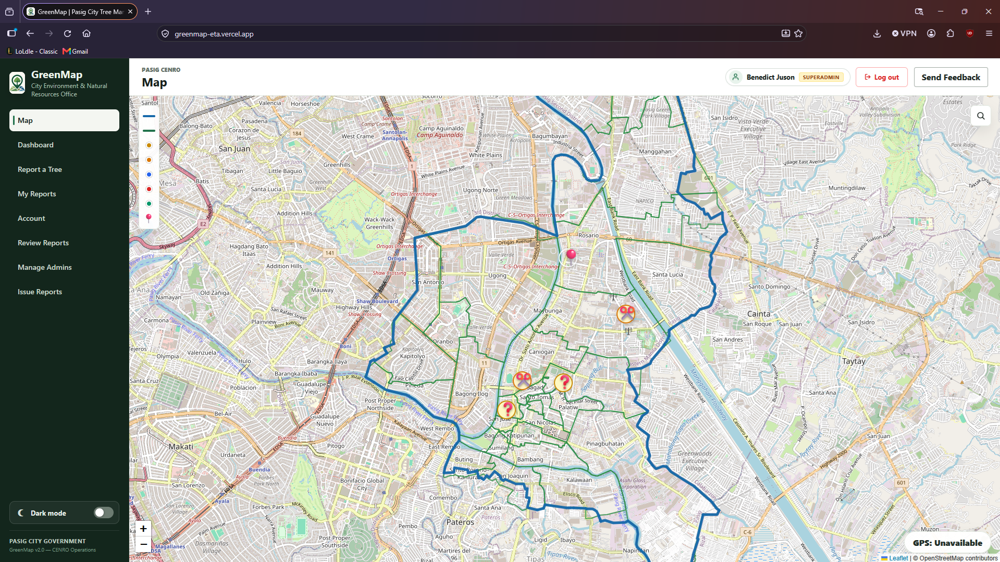
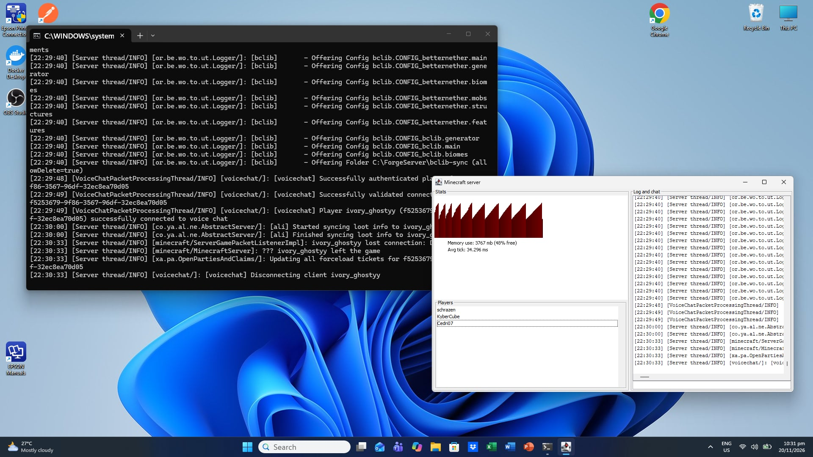
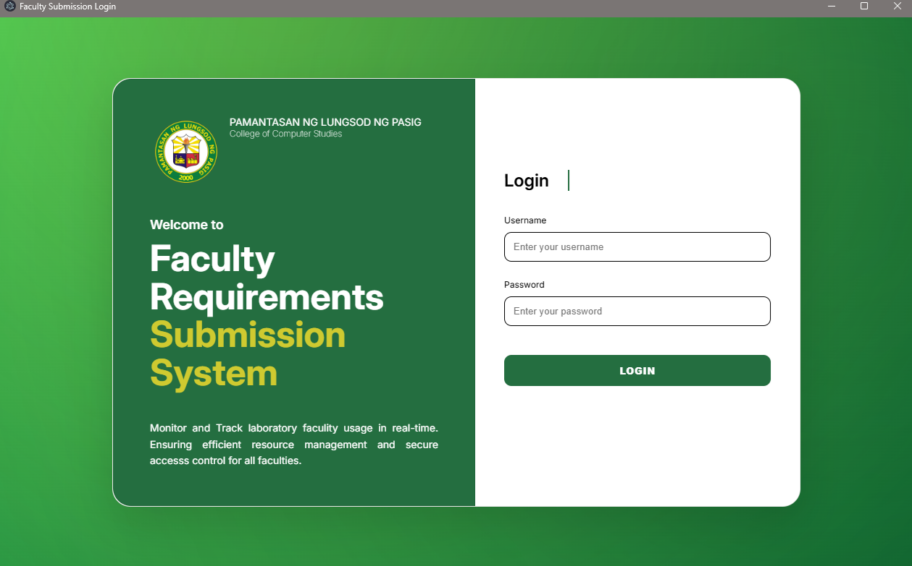
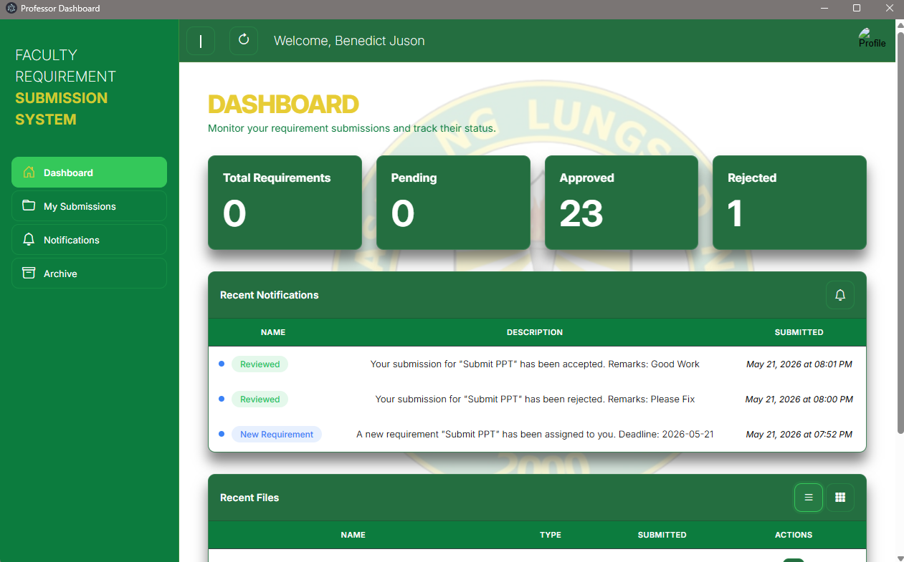

01GreenMap
A web project built with a full-stack set of tools and deployed across modern cloud platforms.
Visit live projectPORTFOLIO · 2026
Hey, I’m Benedict Juson — a developer who enjoys turning ideas into useful digital experiences, from web apps to game servers.
Explore my projectsSELECTED WORK
A few things I’ve built, hosted, and learned along the way.

01A web project built with a full-stack set of tools and deployed across modern cloud platforms.
Visit live project
02A self-hosted modded server bringing friends together to play, explore, and build.
View QA reports and test cases

03A submission system with a faculty dashboard, built with a JavaScript front end and a MySQL-backed server.
OUTSIDE THE CODE
I also enjoy getting an early look at games and helping test them while they’re still in development.